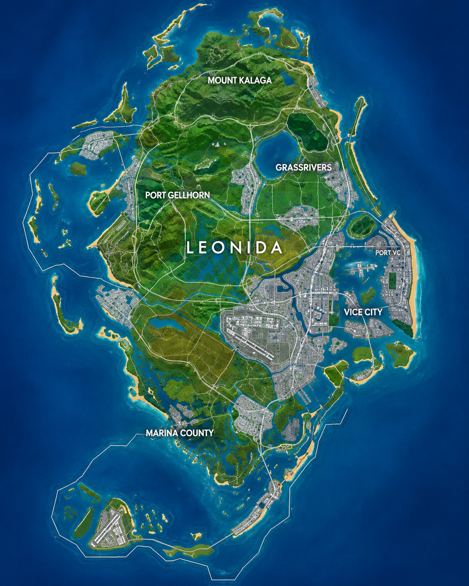

Leonida, zona por zona.
Rockstar ha presentado Vice City y otras regiones de Leonida. Aquí las ordenamos con imágenes y contexto para que puedas reconocerlas.
El mapa filtrado de Leonida
Esta imagen corresponde a una reconstrucción publicada a partir del mapa que circuló en agosto de 2026. No es un mapa oficial publicado por Rockstar y puede corresponder a una versión de desarrollo.

Mapa reconstruido a partir de material filtrado y análisis de la comunidad. No representa necesariamente el mapa final.

Vice City
El corazón urbano: rascacielos, playas, carreteras y una ciudad llena de actividad.

Leonida Keys
Islas y carreteras costeras que amplían el viaje más allá de la ciudad.

Port Gellhorn
Una zona costera de carácter diferente a la Vice City urbana.

Grassrivers
El paisaje de humedales lleva a GTA VI lejos del ambiente metropolitano.
Ambrosia
Otra de las localizaciones nombradas oficialmente por Rockstar. La galería oficial incluye capturas específicas de la zona.
Mount Kalaga National Park
El parque nacional completa el abanico de paisajes mostrados oficialmente.
¿Y el supuesto mapa filtrado?
¿Qué sabemos realmente?
El mapa filtrado no ha sido confirmado por Rockstar. La prensa y la comunidad han señalado que el material apareció junto a otras filtraciones en agosto de 2026, pero una filtración puede ser antigua o cambiar durante el desarrollo.
Analizar las filtraciones →